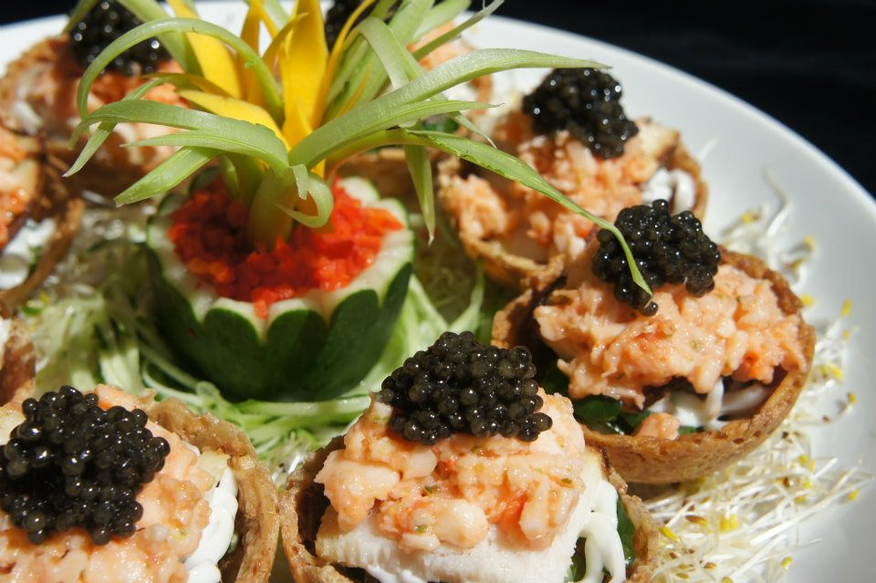

★
1
2
3
4
5
6
7
8
9
10
11
12
13


1. 德芙蘭農場
- 露營區
- 1.兒童遊戲沙坑
- 2.兒童戲水池
- 3.溜滑梯
- 4.森林步道
連絡電話 0955-497-898

2. 德芙蘭農場
狩獵戰場模擬射擊傳統射箭、泰雅手工藝DIY、生態導覽、原住民風味餐、漁獵戰場、捕魚體驗、山林夜間探索
集合點：沐樂居民宿
聯絡電話 0918-770-439


3. 德芙蘭生態步道
被譽為「谷關最優美的步道」，全程3公里的環狀步道，路段多為緩坡適合全家大小健走


4. 阿嬌姨的店
販售/寄賣在地山產及食品
紅藜饅頭、黑木耳露、五葉松汁、季節水果與蔬菜
聯絡電話 (04)2594-3439


5. 魚之鄉鱘龍魚
餐飲/養殖/休閒
以食材去搭配食材,讓食物的味道更有層次
鱘龍魚 + 新亞洲無國界料理
讓您一再回味的動人料理
聯絡電話 (04)2594-3349

6. 達娜萊露營區
達娜萊，泰雅話意指「驚訝」的意思。
露營區內寬敞舒適，備有兒童浴池，不定時舉辦民歌歡唱及互動活動等。
聯絡電話 0979-334-213

7. 古拉斯風味餐
格妮婩原汁原味溫暖手作紅藜饅頭、黑木耳露、小米酒、五葉松汁、純天然手工食品
現場DIY製作(限假日)
聯絡電話 0958-007-335

8. 松滋露營區
風景優美、場地遼闊
環境舒適整潔
適合全家大小一起同歡
聯絡電話 0955-779-235

9. 唐麻丹山步道
唐麻丹山是「谷關七雄」之一，海拔1305公尺，步道連接「蝴蝶谷瀑布」，造福了喜愛登山與遊山玩水的遊客

10. 東昌養鱒場
餐廳只有禮拜天及國定假日的中午才有提供虹鱒或鱘龍魚的料理
聯絡電話 0937-238-893

11. 久良栖林場巷
「久良梄」是松鶴部落在日治時代的舊地名
巷內有日據時代榮民古厝及百年歷史古厝 - 檜木板屋等歷史建築

12. 谷關山景餐廳
鱘龍魚新鮮味美、雞肉Q彈，恍如置身山雲間用餐
★例假日與連續假日用餐需提前「一天以上」預約
聯絡電話 (04)2594-3788

13. 神農谷段木香菇
GAP全球優良農業
通過有機無毒認證
產品包含：
神農谷段木香菇(乾)
神農谷段木香菇(濕)
★產季為10月至隔年2月
聯絡電話 0913-311-580